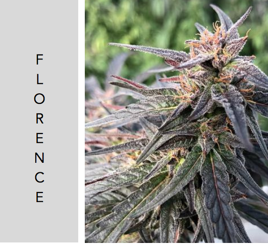

We will contact you shortly to discuss a delivery schedule that meets your needs.
All of our feminized seedlings are in 72 count trays and potted in organic soil. We are are in process on our organic certification, and are happy to talk about our horticultural practices and answer any questions that you might have.
BoxWine
BoxWine is the next generation Cherry Wine. It is selected for higher terpene and resin content, and will finish earlier than Cherry Wine. It also does well in high wind environments. You can expect about 2lb/plant yield. It is a BaOX x Cherry Wine F2.
16% CBD
Early October Finish
Get in touch for COAs and more information
Florence
<<<<<<< Updated upstream
We are a year-round nursery with the capacity to deliver in quantity, according to your schedule.
Call us to find out about cultivars that suit you. We can also chat about ways specific cultivars can help
your bottom line. Whether you are looking to improve costs, harvest yield or timing, or get your hands on
particular flavor profile, we likely have something for you. We also provide auxiliary library services,
and can source particular cultivars or maintain your proprietary material.
=======
Florence is a cross of BaOX and Otto II with intense aromas of Starburst candy, and a higher calyx to leaf ratio resulting in more flowers. Florence also finishes the last week of September/first week of October! You can expect a bit under 2lb/plant yield, and it will be easier to trim.
>>>>>>> Stashed changes
16% CBD
Late September Finish
Get in touch for COAs and more information

BaOx Hybrid
A stable cross of two oustanding BaOx parents, this is a reliable cultivar that is grown nationally. Exceptionally floral with a compact growing habit, BaOx Hybrid should finish late September and clock in with a CBD % from 12-17%.